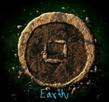

A century ago, young Avatar Aang, afraid of his new responsibilities, fled from his home and was forced into the ocean by a storm. He encased himself in suspended animation in an iceberg near the South Pole. Shortly afterward, Fire Lord Sozin, the ruler of the Fire Nation, launched a world war to expand his nation's empire. Knowing that the Avatar must be an Air Nomad, he carried out a genocide against the Air Nomads with the help of a comet enhancing firebenders' power. A hundred years later, siblings Katara and Sokka, teenagers of the Southern Water Tribe, accidentally discover Aang and revive him.
In the first season, Aang travels with Katara and Sokka to the Northern Water Tribe so he can learn waterbending and be prepared to defeat the Fire Nation. Prince Zuko, the banished son of the current Fire Lord Ozai, pursues them, accompanied by his uncle Iroh, hoping to capture the Avatar in order to restore his honor. Aang is also pursued by Zhao, a Fire Nation admiral aspiring to win Ozai's favor. When his navy attacks the Northern Water Tribe, Zhao kills the moon spirit; Yue, the princess of the tribe, sacrifices her life to revive it, and Aang drives off the enemy fleet.
In the second season, Aang learns earthbending from Toph Beifong, a blind twelve-year-old earthbending prodigy. Zuko and Iroh, now fugitives from the Fire Lord, become refugees in the Earth Kingdom, eventually settling in its capital Ba Sing Se. Both groups are pursued by Azula, Zuko's younger sister and a firebending prodigy. Aang's group travels to Ba Sing Se to seek the Earth King's support for an attack on the Fire Nation timed to an upcoming solar eclipse, during which firebenders will be powerless. Azula instigates.
Fire
Water
Wind
Earth
Avatar Kyoshi
Kyoshi was the Earth Kingdom-born Avatar immediately succeeding Avatar Kuruk of the Northern Water Tribe, and preceding Avatar Roku of the Fire Nation. She died at the age of 230, making her the oldest confirmed human, and was also an exceptionally tall woman, towering over most people.
Avatar Roku
Roku was the Fire Nation-born Avatar immediately succeeding Avatar Kyoshi and preceding Avatar Aang. Roku's memory served as a guiding force for Aang throughout his quest to end the Hundred Year War.
Avatar Aang
Aang was a male Air Nomad born in 12 BG and the Avatar during the Hundred Year War, succeeding Avatar Roku and preceding Avatar Korra. As the Avatar of his time, he was the only person capable of using all four bending arts: airbending, waterbending, earthbending, and firebending. He was also one of a select few Avatars and one of the first in many cycles to learn the ancient art of energybending and the first Avatar known to have actively used the technique